5.3.2
Interactive Turtles
The intention of this library – interactive turtle
graphics – is two-fold:
to provide a fun toolkit to introduce
elementary (Australia/UK: primary) age
children to programming using a subset of
Racket, possibly in the company of their parents.
to explore in its implementation
some of the simpler ideas of layered languages a la
PLAI.
1 Motivation: Why Turtle Graphics? Why Racket?
The choice of turtle graphics in Racket is in the tradition of
Seymour Papert’s Logo language and Microworlds, and more recently
the MIT Scratch project. Papert’s idea was to provide children
with a low bar to entry, but no ceiling on achievement.
My motivation: when I was a teenager and getting my first
computer an old friend of my father advised me to “learn
Pascal, rather than Basic”. With my own children, I wanted to
start with a Lisp (i.e. Racket), but the current materials are
not aimed at the under-10 set, so this project is my first
attempt to lower the age bar.
Modern child-oriented languages like Scratch and Alice
have much to commend them, but I fear that they may be subject to the
cultural trap that Logo fell into, of becoming perceived as
child-only languages, with a sharp discontinuity when
make the leap to mainstream languages.
Why not instead give them the keys to the kingdom of Racket /
Scheme / Lisp, and aim for a smoother learning curve?
Turtle graphics provide children with a self-contained, concrete
"microworld" in which the child can instruct the turtle to draw
pictures, simultaneously exploring several mathematical concepts
and gaining a foothold in the world of programming.
2 Getting started - an interactive visual guide
This package is designed to be used interactively from within Dr Racket.
From the interactive prompt type
| (require "turtle-graphics.rkt") |
and press <Enter>.
2.1 Basic commands
The basic commands control the turtle and output a new image interactively:
Clear the world:
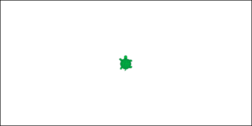
Move the turtle forward 50 pixels,
leaving a trail:

Turn right 90 degrees:
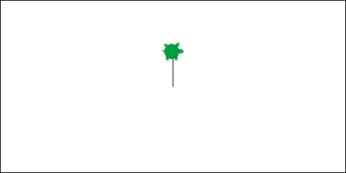
Change the color of the turtle’s pen:
takes effect when the turtle next draws.
Move the turtle back 100 pixels,
leaving a trail:
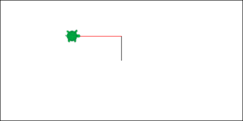
Turn left 225 degrees:
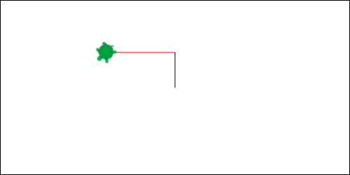
Hop forward 150 pixels (no trail):
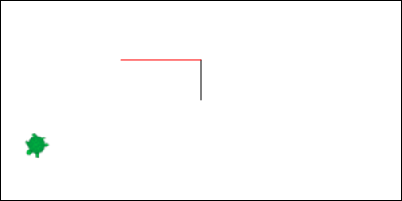
- hop backward 200 pixels (no trail):
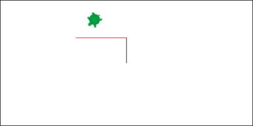
2.2 Interactive commands
Undo the previous command. You can undo as
many times as there are steps to undo. Undo (and redo) are
vital in-so-far as they allow the child to experiment, and
make mistakes as they learn:
Redo the previous command. Reverse of undo.
Print a listing of the commands
so far:
| '((fd 50) |
| (rt 90) |
| (color red) |
| (bk 100) |
| (lt 225) |
| (hop 150) |
| (hop-bk 200)) |
This is especially useful in allowing a child to build up
a sequence of commands interactively, then copy them into
Dr Racket’s definition window for saving / turning into a
subroutine.
2.3 Advanced commands
| (repeat 3 (fd 100) (rt 120)) |
The repeat command repeats a sequence of commands.
In this example the effect of going forward then turning right
120 degrees three times is to draw a triangle:
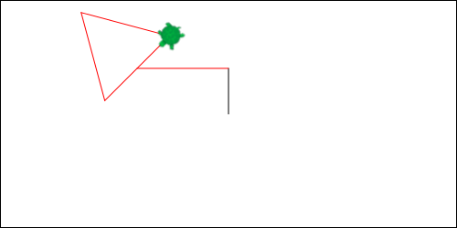
The set-turtle command changes the appearance of the turtle.
A pink girl and a choo-choo train are the out-of-the-box options.
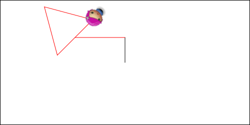
Redraws the current image with the current turtle:
Animates the drawing so far in a separate window.
TODO: Get an animated gif in here!
2.4 Defining your own commands
| (def (colored-square c pix) |
| (color c) |
| (repeat 4 (lt 90) |
| (fd pix))) |
Use def to capture a sequence of commands and give them a name.
This is how the child extends the language beyond the basic
commands.
Once you have defined a new command you can use it:
| (colored-square 'green 75) |
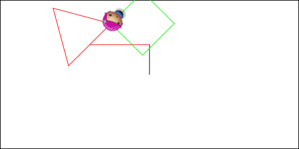
Some out-of-the-box defs are provided:
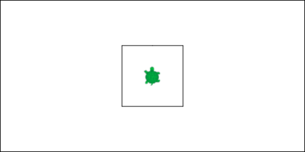
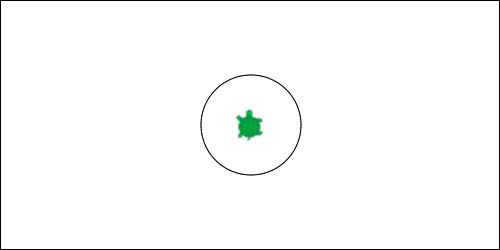
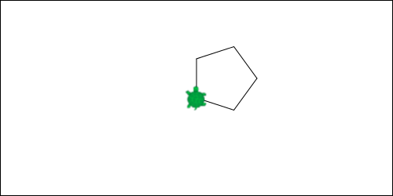
Square, circle and half-polygon are also pre-defined.
3 Getting started - Challenges for Kids (and Adults)
3.1 Draw your name
Start by figuring out a single letter, for example J:
| (def (J) |
| (rt 180) |
| (fd 100) |
| (half-polygon 100 2.5) |
| (hop 103) |
| (rt 90) |
| (hop 25) |
| (fd 100)) |
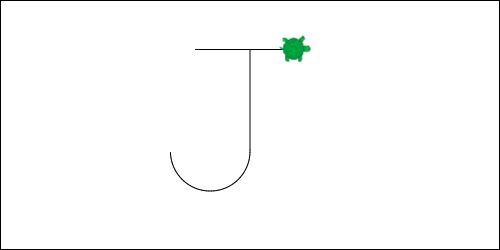
And work your way up to your whole first name:
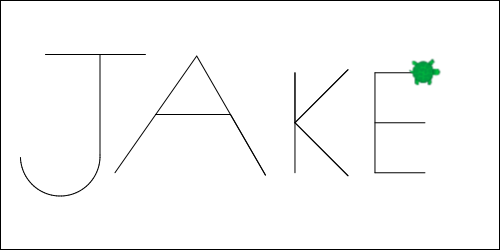
4 Understanding the Implementation
5 Extending the Implementation
6 Where to from here?
For children, the Bootstrap project, which enables children
to design and implement their own games in Racket could be
a suitable next step.
For implementors (including parents), Shriram Krishnamurti’s
PLAI book and lectures, or possibly head to The Realm of Racket.